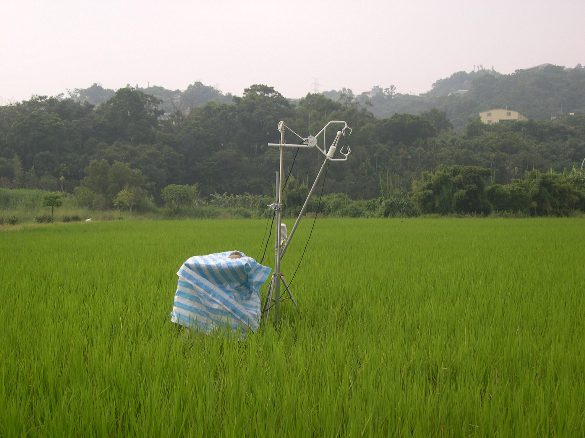

[Environmental Biophysics Laboratory]
環境生物物理研究室

隨著全球暖化問題的日益嚴重，研究生態系與大氣之間的可感熱、水汽、及二氧化碳交換率(即通量， flux)與碳循環、氣候變遷間的關係已成為世界各國矚目的焦點；尤其在聯合國京都議定書(Kyoto Protocol)簽訂後，二氧化碳排放量攸關了各國綠色帳本之成本與收入的措施。在此提倡綠色能源的大環境下，了解大氣及陸地間之二氧化碳交換量已成為新的發展趨勢。
歡迎各位的加入，與我們一同關心這片生長的土地!!
著作權所有 (c) 2009 Environmental Biophysics LAB。保留所有權利。 Email: r96622009@ntu.edu.tw